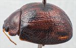
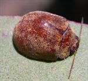
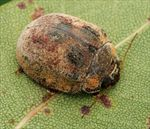
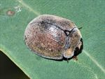
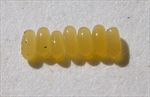
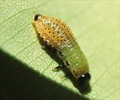
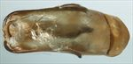
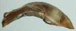
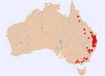

Click on images to enlarge

Female, Stanthorpe, S.E. Queensland

Female, Sawpit Creek, Kosciuszko N.P.

Female, Stanthorpe, S.E. Queensland

Female, Munduberra, Queensland

Egg batch of T. catenata

3rd instar larva

Aedeagus, dorsal view (Withcott, S.E. Queensland)

Aedeagus, lateral view (Withcott, S.E. Queensland)

Distribution (pale-coloured circles indicate records obtained from iNaturalist)
Ta01
Name
Trachymela catenata (Chapuis)
Reference specimen
2000-0062a, Boonoo Boonoo, NE New South Wales.
Adult Description
Length: ♂ 6.7–8.2(8.5) mm (n=65), ♀ (6.9)7.2–9.2 mm (n=107).
Colouration:
Head: Variable; uniformly reddish-brown with black-tipped mandibles, to bearing a broad black triangular patch between the eyes (widest anteriorly). In dark individuals, black pigmentation occupies almost the entire interocular space and extends anteriorly, rendering mandibles entirely black. Antennomeres 1–11 pale to mid-brown, distal segments occasionally slightly darker.
Pronotum: Brown, concolorous with head; frequently marked with two longitudinal black vittae/patches ranging from faint to sharply defined.
Scutellum: Brown, concolorous with pronotum; margins usually broadly bordered with slightly to markedly darker brown, or entire surface infuscate.
Elytra: Brown, concolorous with pronotum, typically bearing several dark brown to black maculae: a subcircular patch straddling the elytral summit, a basal patch continuing the longitudinal pronotal vitta, and an interrupted band extending along the discal margin from the humeral callus toward the apex. Explanate lateral margins occasionally partially black; humeral calli frequently darker brown; maculae very rarely entirely absent. Punctures narrowly outlined in a slightly darker shade than interstices.
Venter & Legs: Venter mid- to dark brown, rarely sub-black; legs usually slightly paler. Inner surface of elytral epipleura variable, ranging from brown to partially or entirely black.
Cuticular Wax: Sparse to dense, uniform pale grey to brown. Bicoloured in some specimens, with narrow pale grey marginal bands on the pronotum and elytra contrasting against a darker brown disc.
Morphology:
Head: Puncturation variable, typically moderately coarse (puncture diameter ≈ 2× eye facet diameter), dense, and slightly unevenly distributed, sometimes partially obscured by rugose interstices (rarely finer and more uniform). Antennae long (AL/BL: ♂ 48–53%, ♀ 39–44%), filiform.
Pronotum: Transversely evenly convex, with a broad, very shallow depression posterior to each eye. Discal puncturation distinctly impressed, moderately dense, and relatively evenly distributed (finer, sparser and less even in north Queensland specimens), with minute micropunctures intermixed; punctures becoming markedly coarser toward lateral margins. Anterior angles rounded, sub-rectangular; lateral margins smoothly curved toward posterior margin.
Scutellum: Sparsely punctate (densest anteriorly); punctures similar in diameter to adjacent pronotal punctures.
Elytra: Dorsal surface evenly convex; punctures distinct, relatively evenly distributed, with sparse micropunctures on the interstices. Bearing several longitudinal series of slightly elevated, pimple-like tubercles (each with a fine central puncture), inconspicuous due to being almost concolorous with the disc. Suture distinctly carinate in posterior 25%; surface continuous beneath humeral callus; vertical epipleural extension substantial (HCE/PW = 0.36–0.40). Lateral margin slightly oblique between humeral callus and a point just anterior to summit, straight and perpendicular elsewhere.
Venter: Prosternal process subparallel-sided, open to weakly closed anteriorly, bearing short setae posteriorly; mesoventrite glabrous; anterior and median trochanters each bearing a single long seta; anterior margin of metaventrite flat, bevelled, truncate; 1st abdominal ventrite smooth and impunctate; inner posterior margin of epipleura lacking setae.
Male Genitalia (Aedeagus):
Dimensions: small (LPE = 25–29%BL), subquadrate.
Dorsal view: Shaft subparallel-sided along most of length, expanding slightly pre-apically before converging in a smooth arc to a barely protruding apex. Dorsal surface evenly convex with a faint dorsomedian channel; ostium transversely ovate.
Lateral view: Shaft evenly curved throughout, tapering in thickness across the distal 20%; apical tip slightly reflexed, extremely thin and spout-like (readily compressed or distorted upon drying); protruding flagellum strongly curved and moderately stout.
Immature Stages
Eggs: Yellow, laid in batches of about 8 (?) side-by-side on surface of leaves.
Larvae:
3rd instar: light-green overall; with black head and legs, and abdominal segments showing a slight tinge of red. Black markings on prothorax. Small black tubercles on thoracic segments, and prominent, larger tubercles on abdominal segments. These larvae are rather flattened in appearance. Apical abdominal segment covered in black, shield-like chitin.
4th instar: Colour becomes considerably darker, with mesothorax, metathorax and abdomen tending towards dark red-brown. Prothorax is creamy white (with speckled black markings), with margins brownish-red. Head is black. The larvae are quite squat in shape, being widest about the 4th and 5th abdominal segments.
The larvae of Ta01 are quite different to those of Ta13 or Ta26.
Similar species
Ta13: Adults share very similar maculation patterns on the pronotum and elytra, making females difficult to separate reliably. Ta13 is distinguished by yellow-brown (mustard-coloured) cuticular wax, an aedeagus with a nearly straight (truncate) rather than rounded apical margin, and a narrower host association restricted to ironbarks.
Ta26: Significantly larger with almost no overlap in size distributions between sexes. Ta26 typically lacks dark pronotal and elytral maculae (except in specimens from north Queensland and the far south-western part of its distribution).
Ta69:
Notes
Taxonomy: The identification of Ta01 as Trachymela catenata is by B.J. Selman, from a Boonoo Boonoo (NE New South Wales) specimen. The holotype in RBINS has been examined and it is clearly a specimen of this species. Ta01 is the most frequently encountered member of the catenata group of species. All the species in this group differ from other Trachymela in both laying their eggs on the surface of leaves rather than cryptically under bark or in crevices in the trunk and having larvae that rest exposed on the foliage that they are feeding on.
Distribution & Abundance: This is a widely distributed and commonly encountered species in coastal and highland areas of Queensland, New South Wales and Victoria, where it is often present in large numbers. It is very similar in appearance to Ta13.
Host Associations: Ta01 has a remarkably wide host range across widely differing eucalypts compared with most other Trachymela. In the northern parts of its distribution, it is most commonly found on various species of ironbark (Symphyomyrtus : Adnataria), particularly Eucalyptus melanophloia, E. crebra, E. fibrosa and E. cullenii as well as on Angophora. Specimens from the highlands of NSW (e.g., around Tenterfield in the north and Cooma in the south) have been primarily found on the snow gum, E. pauciflora (Eucalyptus : Cineraceae), E. stellulata (Eucalyptus : Longitudinales) and narrow-leaf peppermint, E. acaciiformes (Symphyomyrtus : Maidenaria). Many specimens have also been collected from Spotted Gum, Blakella maculata. These hosts account for 78% of host records with unidentified Eucalyptus sp. (28 records) accounting for most of the rest. Single records each from Blakella dallachiana, B. tessellaris, E. bridgesiana, E. leptophleba and a stringybark species are likely to be incidental records or host misidentifications and not indicative of host preference.
Morphological Variation: There is a wide variation in the extent of the black markings, with rare specimens showing none at all.
Population Structure: The sex ratio of this sample of 215 specimens examined is female-biased, with 60% being female, which constitutes a statistically significant departure from a 50:50 sex ratio for the population (exact binomial test, p = 0.004).
Copyright © 2026. All rights reserved.
{kind=link}
{kind=link}
{kind=link}
{kind=link}
{kind=link}
{kind=link}
{kind=link}
{kind=link}
{kind=link}